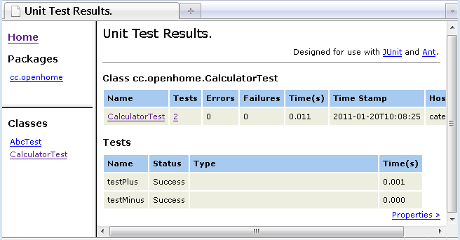

可以將JUnit的測試過程在Ant建構的過程訊息中顯示出來，只要加入<formatter>標籤設定即可：
....
<target name="test" depends="compile">
<junit printsummary="yes">
<formatter type="plain" usefile="false"/>
<batchtest>
<fileset dir="\${src.dir}" includes="**/*Test.java"/>
</batchtest>
<classpath>
<pathelement location="\${bin.dir}"/>
<pathelement location="\${junit.dir}"/>
</classpath>
</junit>
</target>
....
一個執行的訊息範例如下：
...
test:
[junit] Running cc.openhome.AbcTest
[junit] Testsuite: cc.openhome.AbcTest
[junit] Tests run: 1, Failures: 0, Errors: 0, Time elapsed: 0.019 sec
[junit] Tests run: 1, Failures: 0, Errors: 0, Time elapsed: 0.019 sec
[junit]
[junit] Testcase: testAbc took 0.005 sec
[junit] Running cc.openhome.CalculatorTest
[junit] Testsuite: cc.openhome.CalculatorTest
[junit] Tests run: 2, Failures: 0, Errors: 0, Time elapsed: 0.005 sec
[junit] Tests run: 2, Failures: 0, Errors: 0, Time elapsed: 0.005 sec
[junit]
[junit] Testcase: testPlus took 0.002 sec
[junit] Testcase: testMinus took 0 sec
...
當usefile屬性預設值為true，會自動幫您將產生的結果儲存在檔案中，預設是TEST-*.txt，儲存於執行ant指令的目錄，其中*是您的測試案例類別名稱，有幾個測試類別就產生幾個.txt，可以在<test>或<batchtest>上使用todir屬性指定儲存位置。就上例而言，其產生的報告檔案TEST-cc.openhome.CalculatorTest.txt內容如下：
Testsuite: cc.openhome.CalculatorTest
Tests run: 2, Failures: 0, Errors: 0, Time elapsed: 0.005 sec
Testcase: testPlus took 0.001 sec
Testcase: testMinus took 0 sec
Tests run: 2, Failures: 0, Errors: 0, Time elapsed: 0.005 sec
Testcase: testPlus took 0.001 sec
Testcase: testMinus took 0 sec
<formatter>標籤還可以設定將測試的結果，以XML文件儲存下來，只要指定type屬性為xml即可，會將測試的結果儲存至report目錄中，檔案名稱為TEST-*.xml，*是您的測試案例類別名稱。
可以將測試結果所產生的XML文件轉換為HTML文件，<junitreport>標籤使用 XSLT將XML文件轉換為HTML文件，一個撰寫的例子如下所示：
<project name="example" default="report">
<property name="src.dir" value="src"/>
<property name="bin.dir" value="bin"/>
<property name="report.dir" value="report"/>
<property name="junit.dir" value="lib/junit-4.8.2.jar"/>
<target name="clean">
<delete dir="\${bin.dir}"/>
<delete dir="\${report.dir}"/>
</target>
<target name="prepare" depends="clean">
<mkdir dir="\${bin.dir}"/>
<mkdir dir="\${report.dir}"/>
</target>
<target name="compile" depends="prepare">
<javac srcdir="\${src.dir}" destdir="\${bin.dir}">
<classpath>
<pathelement location="\${junit.dir}"/>
</classpath>
</javac>
</target>
<target name="test" depends="compile">
<junit printsummary="yes">
<formatter type="xml"/>
<batchtest todir="\${report.dir}">
<fileset dir="\${src.dir}" includes="**/*Test.java"/>
</batchtest>
<classpath>
<pathelement location="\${bin.dir}"/>
<pathelement location="\${junit.dir}"/>
</classpath>
</junit>
</target>
<target name="report" depends="test">
<junitreport todir="\${report.dir}">
<fileset dir="\${report.dir}">
<include name="TEST-*.xml"/>
</fileset>
<report format="frames" todir="\${report.dir}/html"/>
</junitreport>
</target>
</project>
<include>設定搜尋TEST-*.xml文件，將之轉換為HTML文件，而最後的結設定儲存至 report/html/目錄下，format屬性中設定HTML文件具有框架，如果不設定這個屬性則HTML報告文件就不具有框架，上例所產生的 HTML文件如下：
